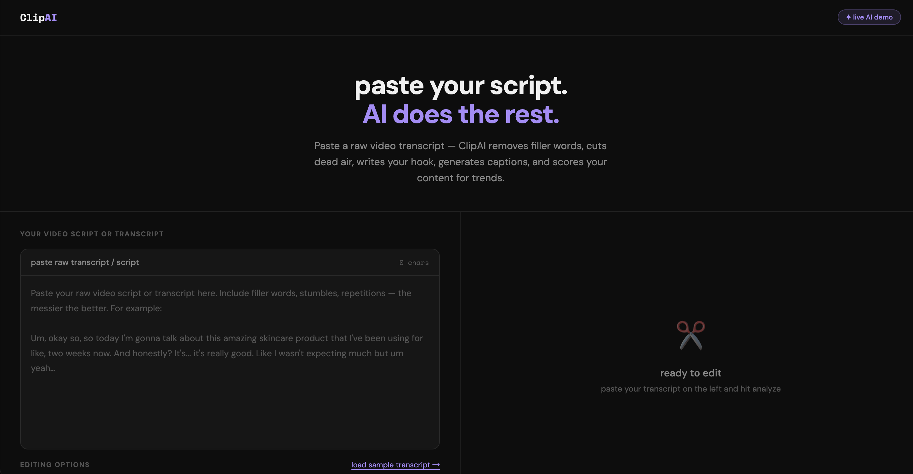
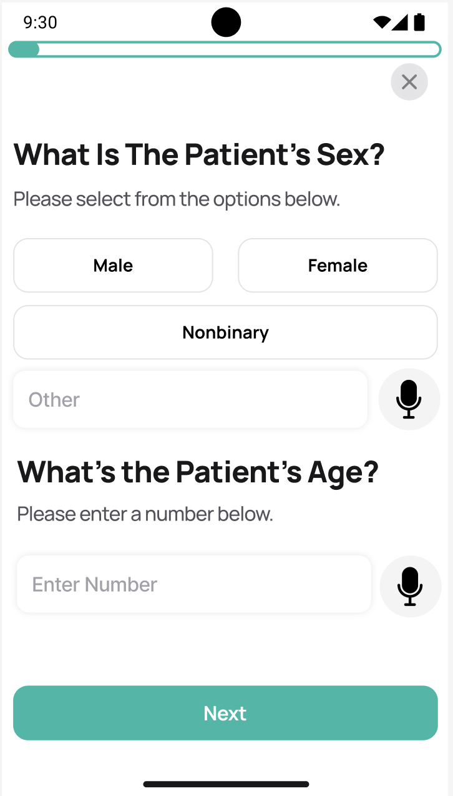
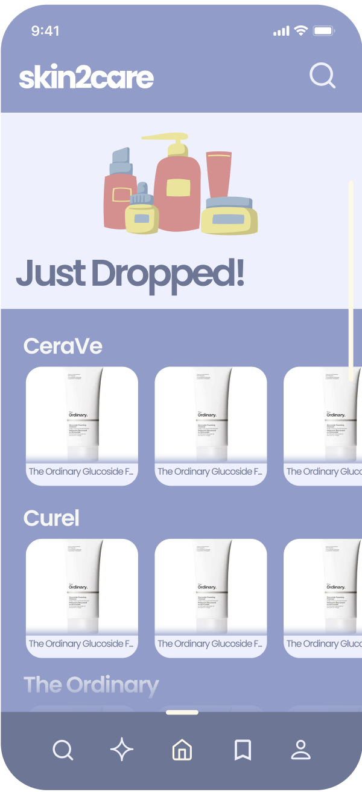

Gigi Guan
UC Berkeley Economics & Data Science. I take ideas from zero to live demo. Building at the intersection of product strategy, user experience, and applied AI.
Featured Projects

ClipAI
An AI-powered UGC video editing platform. Autobiographically engineered to transcribe, remove filler words, craft compelling hooks, score viral trends, and curate audio tracks.

ChatCHW
Clinical decision support architecture designed for community health workers. Orchestrated a robust testing pipeline capable of processing thousands of simulated patient narratives through complex clinical logic.

Skincare Assistant App
A bespoke UX/UI conceptual design for an AI-powered skincare recommendation assistant. Meticulously engineered user flows focused on personalized health and cosmetic insights.
About Me
I'm Gigi, a student at UC Berkeley studying Economics and Data Science. I am driven by a deep fascination with product strategy, data-driven insights, and human-centered design. My work isn't just about writing code; it's about deeply understanding user friction and engineering end-to-end solutions that actually matter.
From architecting a clinical decision pipeline for community health workers to conceptualizing and building a fully functional AI video editor, I specialize in zero-to-one execution. I care about the complete lifecycle of a product: the core thesis, the business case, the aesthetic experience, and the applied logic required to bring it to life.